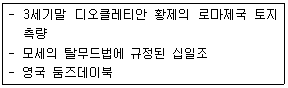

지적산업기사 (2012-03-04 기출문제)
1과목: 지적측량
1. 축척 1/1200 지역의 지적도근점측량에서 각 측선의 수평거리의 총 합계가 2500m 인 경우, 2등도선의 연결오차는 최대 얼마 이하로 하여야 하는가?
- 0.60m
- 0.70m
- 0.80m
- 0.90m
(정답률: 60%)

2. 다음 중 경위의 측량방법에 따른 세부측량에서 수평각의 관측 방법으로 옳은 것은?
- 2배각의 배각법
- 3배각의 배각법
- 1회 관측의 교각법
- 2대회의 방향관측법
(정답률: 46%)
3. 지적도근점의 각도 관측시 배각법을 따르는 경우 오차의 배분 방법으로 옳은 것은?
- 측선장에 비례하여 각 측선의 관측각에 배분한다.
- 변의 수에 비례하여 각 측선의 관측각에 배분한다.
- 측선장에 반비례하여 각 측선의 관측각에 배분한다.
- 변의 수에 반비례하여 각 측선의 관측각에 배분한다.
(정답률: 74%)
4. 공유수면매립지의 토지 중 제방 등을 토지에 편입하여 등록하는 경우 지상경계의 결정 기준으로 옳은 것은?
- 구조물의 하단부
- 구조물의 중앙부
- 최소만수위가 되는 선
- 바깥쪽 어깨부분
(정답률: 74%)
5. 다음 중 일람도의 작성을 하지 아니할 수 있는 경우 기준으로 옳은 것은?
- 도면의 장수가 2장 미만인 경우
- 도면의 장수가 3장 미만인 경우
- 도면의 장수가 4장 미만인 경우
- 도면의 장수가 5장 미만인 경우
(정답률: 80%)
6. 평판측량방법에 따른 세부측량을 도선법으로 한 결과 도선의 폐색오차가 0.7mm발생하였다. 변의 수가 10개 일 때 제6변에 배분할 오차는 얼마인가?
- 0.4mm
- 0.5mm
- 0.6mm
- 허용오차 초과
(정답률: 54%)
7. 평판측량방법에 따라 조준의를 사용하여 측정한 두 점간의 경사거리가 60m 이었을 때 수평거리는 얼마인가? (단, 경사분획은 25 이다.)
- 53.67m
- 57.43m
- 58.21m
- 59.93m
(정답률: 59%)
8. 다음 중 데오도라이트의 3축의 조건으로 옳지 않은 것은?
- 시준축 = 수평축
- 수평축 ┸ 수직축
- 수직축 ┸ 시준축
- 시준축 ┸ 수평축
(정답률: 67%)
9. 다음 경위의측량방법에 따른 세부측량의 기준 및 방법에 대한 설명으로 옳은 것은?
- 측량결과도는 항상 축척 1000분의 1로 작성한다.
- 거리측정단위는 1mm로 한다.
- 토지의 경계가 곡선인 경우 직선으로 연결하는 곡선의 중앙종거의 길이는 5cm 이상 10cm 이하로 한다.
- 농지의 구획정리지역의 측량결과도는 500분의 1로 작성한다.
(정답률: 72%)
10. 도면의 축척이 1/600 인 지역을 1/1200 으로 잘못 판단하여 면적을 측정한 결과가 900m2 이었을 때, 올바른 면적은 얼마인가?
- 225m2
- 450m2
- 1800m2
- 3600m2
(정답률: 37%)
11. 축척이 1/600 인 지역에서 분할 필지의 측정면적인 135.65m2일 경우 면적의 결정은 얼마로 하여야 하는가?
- 135m2
- 135.6m2
- 135.7m2
- 136m2
(정답률: 79%)
12. 경위의 측량방법에 따른 세부측량에서 경계점간 거리를 2회 측정한 결과 124.19m, 124.21m이었을때 교차가 최대 얼마이하일 때에 그 평균치를 경계점간 거리로 할 수 있는가?
- 3cm
- 4cm
- 5cm
- 6cm
(정답률: 56%)
13. 다음 중 평판측량방법으로 세부측량을 하는 때에 측량 준비 파일에 포함하여야 할 사항에 해당하지 않는 것은?
- 인근 토지의 경계선
- 지적기준점
- 도곽선과 그 수치
- 경계점 간 계산거리
(정답률: 59%)
14. 다음 중 평판측량방법에 따른 세부측량을 도선법으로 하는 경우의 기준으로 옳지 않은 것은?(단, N 은 변의 수를 말한다.)
- 도선의 변은 20개 이하로 한다.
- 도선의 측선장은 도상길이 10cm 이하로 한다.
- 도선의 폐색오차가 도상길이의 √n/3mm 이하인 경우 오차를 각 점에 배분한다.
- 위성기준점, 통합기준점, 삼각점, 지적삼각점, 지적 삼각보조점 및 지적도근점, 그 밖에 명확한 기지점 사이를 서로 연결한다.
(정답률: 73%)
15. 다음 중 지적소관청이 축척변경 시행기간 중에 축척변경시행지역에서 축척변경 확정공고일까지 정지하여야 하는 것은?(단, 나 항의 경계복원측량의 경우 경계점표지의 설치를 위한 경계복원측량은 제외한다.)
- 등록전환측량
- 경계복원측량
- 토지분할측량
- 지적현황측량
(정답률: 64%)
16. 다음 중 관측자가 주의하여도 소거할 수 없으며 오차의 발생 원인이 명확하지 않은 특징을 갖는 것은?
- 착오
- 부정오차
- 정오차
- 추차
(정답률: 78%)
17. 경위의측량방법과 교회법에 따른 지적삼각보조점의 관측에서 1방향각에 대한 수평각의 측각공차는 최대 얼마 이내이어야 하는가?
- 20초
- 30초
- 40초
- 50초
(정답률: 86%)
18. 광파기측량방법에 따라 다각망도선법으로 지적삼각보조점측량을 하는 경우 1도선의 거리는 최대 얼마이하로 하여야 하는가?
- 1km
- 2km
- 3km
- 4km
(정답률: 66%)
19. 지적측량을 위한 거리의 측정시 동일거리를 2회 측정한 결과가 150.25m, 150.30m이었을 때 거리측정의 정도는 약 얼마인가?
- 1/1500
- 1/2000
- 1/2500
- 1/3000
(정답률: 41%)
20. 다음 중 도면의 등록하는 도곽선의 제도 방법 기준에 대한 설명으로 옳지 않은 것은?
- 도곽선은 0.1mm의 폭으로 제도한다.
- 도곽선의 수치는 2mm의 크기로 제도한다.
- 지적도의 도곽 크기는 가로30cm 세로40cm로 한다.
- 도곽선의 수치는 도곽선 왼쪽 아래 부분과 오른쪽 윗 부분의 종횡선교차점 바깥쪽에 제도한다.
(정답률: 85%)
2과목: 응용측량
21. 카메론효과에 대한 설명으로 옳은 것은?
- 입체사진에서 물체와 인접한 호수나 바다의 반사하는 빛으로 그 물체가 뜨거나 가라앉아 보이는 효과
- 입체사진에서 이동하는 물체를 입체시하면 그 운동에 의해서 물체가 뜨거나 가라앉아 보이는 효과
- 입체사진에서 안개, 연기 등에 의한 태양 빛의 퍼짐으로 사진 상에 나타난 물체가 높게 보이는 효과
- 입체사진에서 안개, 연기 등에 의한 태양 빛의 퍼짐으로 사진 상에 나타난 물체가 낮게 보이는 현상
(정답률: 46%)
22. 우리나라 1:50000 지형도의 간곡선 간격으로 옳은 것은?
- 5m
- 10m
- 20m
- 25m
(정답률: 77%)
23. 수준측량에 사용되는 용어로 거리가 먼 것은?
- 수준점
- 지반고
- 도근점
- 이기점
(정답률: 69%)
24. 정확한 위치에 기준국을 두고 GPS 위상 신호를 받아 기준국 주위에서 움직이는 사용자에게 위성 신호를 넘겨주어 정확한 위치를 계산하는 방법은?
- DOP
- DGPS
- SPS
- S/A
(정답률: 78%)
25. 철도, 도로 등의 단곡선 설치에서 접선과 현이 이루는 각을 이용하여 곡선을 설치하는 방법은?
- 편각법
- 중앙종거법
- 접선편거법
- 접선지거법
(정답률: 65%)
26. 수준측량의 오차에 대한 설명으로 옳은 것은?
- 정오차는 발생하나 부정오차는 발생하지 않는다.
- 주로 기상의 영향으로 발생한다.
- 오차는 노선거리의 제곱근에 비례한다.
- 오차배분시 경중률은 노선길이의 제곱근에 반비례한다.
(정답률: 45%)
27. 터널 내 측량에 대한 설명으로 옳은 것은?
- 지상측량보다 작업이 용이하다.
- 터널 내의 기준점은 터널 외의 기준점과 연결될 필요가 없다.
- 기준점은 보통 천정에 설치한다.
- 지상측량에 비하여 터널 내에서는 시통이 좋아서 측점간의 거리를 멀리한다.
(정답률: 84%)
28. GPS측량에서 의사거리 결정에 영향을 주는 오차의 원인으로 가장 거리가 먼 것은?
- 위성의 궤도 오차
- 위성의 시계 오차
- 안테나의 구심 오차
- 지상의 기상 오차
(정답률: 72%)
29. 수준측량시 레벨의 불완전 조정에 의한 오차를 제거하는데 가장 적합한 방법은?
- 왕복 2회 측정하여 평균을 취한다.
- 시준거리를 짧게 한다.
- 관측시 기포가 항상 중앙에 오게 한다.
- 전시와 후시의 거리를 같게 취한다.
(정답률: 62%)
30. 지형의 표시방법 중 태양 광선이 서북쪽에서 경사 45도 의 각도로 비친다고 가정하여 지표의 기복에 대하여 그 명암을 2~3색 이상으로 도면에 채색해 기복의 모양을 표시하는 방법은?
- 음영법
- 점고법
- 등고선법
- 채색법
(정답률: 70%)
31. 축척 1:30000으로 촬영한 카메라의 초점거리가 15cm, 사진크기는 23cm X 23cm, 종중복도 60%일 때 이사진의 기선고도비는?
- 0.61
- 0.45
- 0.37
- 0.26
(정답률: 52%)
32. 인접사진으로부터 측정한 굴뚝의 시차차가 3.5mm일 때 지상에서의 실제 높이로 옳은 것은?(단, 사진크기=23cm x 23cm, 초점거리=153mm, 촬영 고도=750m, 사진주점기선장=10cm)
- 75.00m
- 30.62m
- 26.25m
- 15.75m
(정답률: 46%)
33. 경사가 일정한 터널에서 두 점 ab간의 경사거리가 150m이고 고저차가 12m일 때 AB간의 수평거리는?
- 146.5m
- 147.5m
- 148.5m
- 149.5m
(정답률: 52%)
34. 노선의 곡선에서 수평곡선으로 사용하지 않는 곡선은?
- 복신곡선
- 단곡선
- 2차곡선
- 반향곡선
(정답률: 71%)
35. 지적삼각점의 신설을 위한 가장 적합한 GPS 측량 방법은?
- 정지측량방식(static)
- DGPS(Differential GPS)
- Stop ＆ Go 방식
- RTK (Real Time Kinematic)
(정답률: 78%)
36. 캔트를 계산하여 C를 얻었다. 같은 조건에서 곡선 반지름을 4배로 할 때 변화된 캔트(C`)는?
- C/4
- C/2
- 2C
- 4C
(정답률: 48%)
37. 기포관의 감도가 20초인 레벨에서 기계로부터 50M 떨어진 곳에 세운 표척을 시준할 때 기포관에서 2눈금의 오차가 있었다면 수준오차는?
- 1.2mm
- 2.4mm
- 4.8mm
- 9.7mm
(정답률: 28%)
38. 고속차량이 직선부에서 곡선부로 주행할 경우, 안전하고 원활히 통과할 수 있도록 하기 위하여 설치하는 것은?
- 단곡선
- 접선
- 절선
- 완화곡선
(정답률: 83%)
39. 사진지도 중 사진의 경사, 지표면의 비고를 수정하였을뿐만 아니라 등고선이 삽입된 지도는?
- 약조정집성사진지도
- 반조정집성사진지도
- 조정집성사진지도
- 정사투영사진지도
(정답률: 64%)
40. 항공삼각측량시 최근 많이 사용되고 있는 조정기법으로 사진을 기본단위로 하는 방법은?
- 광속 조정법
- 독립 모형법
- 스트립 조정법
- 다항식법
(정답률: 64%)
3과목: 토지정보체계론
41. 다음 중 벡터데이터 구조의 장점으로 옳지 않은 것은?
- 복잡한 현실세계의 묘사가 가능하다.
- 원격탐사자료의 정성적 해석이 용이하다.
- 위치와 속성의 일반화가 가능하다.
- 위상에 관한 정보가 제공된다.
(정답률: 57%)
42. 다음 중 광범위한 자료의 호환을 위한 규약으로서, 국가지리정보체계(NGIS)의 공각데이터 교환포맷으로 하였던 것은?
- SDTS
- DIGEST
- SMS
- SHP
(정답률: 56%)
43. 다음 중 점, 선, 명으로 표현된 객체들 간의 공간 관계를 설정하여 각 객체들 간의 인접성, 연결성, 포함성 등에 관한 정보를 파악하기 쉬우며, 다양한 공각분석을 효율적으로 수행할 수 있는 자료구조는?
- 스파게티(spaghetti)구조
- 래스터(raster)구조
- 위상(topology)구조
- 그리드(grid)구조
(정답률: 73%)
44. 다음 중 다양한 응용프로그램과 데이터베이스가 서로 인터페이스할 수 있는 방법을 제공하는 DBMS의 기능은?
- 저장기능
- 정의기능
- 제어기능
- 조작기능
(정답률: 35%)
45. 디지타이징 및 벡터자료의 편집과정에서 어떤 선이 다른선과의 교차점을 지나서 끝나는 상태의 입력 오차는?
- over lapping
- over shoot
- under shoot
- spike
(정답률: 74%)
46. 다음 중 개방형 지리정보시스템(Open GIS)에 대한 설명으로 옳지 않은 것은?
- 시스템 상호 간의 접속에 대한 용이성과 분산 처리 기술을 확보하여야 한다.
- 국가 공간정보 유통기구를 통해 유통할 경우 개방형 GIS 구축이 필수적이다.
- 서로 다른 GIS 데이터의 혼용을 막기 위하여 같은 종류의 데이터만 교환이 가능하도록 해야 한다.
- 정보의 교환 및 시스템의 통합과 다양한 분야에서 공유할 수 있어야 한다.
(정답률: 85%)
47. 다음 중 토지정보체계(LIS)의 필요성으로 가장 거리가 먼 것은?
- 토지관계 정책 자료의 다목적 활용
- 여러 대장과 도면의 효율적 관리
- 지적 민원의 신속, 정확한 처리
- 토지관련 정보의 보안 강화
(정답률: 70%)
48. 다음 중 데이터베이스의 장점으로 옳지 않은 것은?
- 표준화되고 구조적인 자료 저장 가능
- 자료의 독립성 유지
- 여러 사용자가 동시 사용 가능
- 초기 구축비용과 유지비가 저렴
(정답률: 83%)
49. 다음 중 지적도면을 스캐닝 한 결과로 나타나는 격자구조에 대한 설명으로 옳은 것은?
- 격자구조는 별도의 작업없이 좌표값을 갖는다.
- 격자구조는 데이터의 구조가 복잡하다.
- 격자구조의 정확도는 격자의 면적에 비례한다.
- 격자의 크기가 작을수록 저장되는 자료의 양은 많아진다.
(정답률: 48%)
50. 다음 중 메타데이터(metadata)에 대한 설명으로 옳은 것은?
- 데이터의 내용, 논리적 관계, 기초자료의 정확도, 경계등 자료의 특성을 설명하는 정보의 이력서이다.
- 수학적으로 데이터의 모형을 정의하는데 필요한 구성요소다.
- 여러 개의 변수 사이에 함수 관계를 설정하기 위하여 사용되는 매개 데이터를 말한다.
- 토지정보시스템에 사용되는 GPS, 사진측량 등에서 얻어진 위치자료를 데이터베이스화 한 자료를 말한다.
(정답률: 71%)
51. 다음 중 상·하수도, 전기, 통신, 가스, 송유관, 열난방등의 시설물을 관리· 운영하기 위한 시스템은?
- 지하시설물관리시스템
- 도시정보시스템
- 재난· 재해관리시스템
- 국가지리정보시스템
(정답률: 78%)
52. 다음 중 토지기록 전산화 작업의 목적과 거리가 먼 것은?
- 토지관련 정책자료의 다목적 활용
- 민원의 신속하고 정확한 처리
- 토지 소유 현황의 파악
- 중앙 통제형 행정전산화의 촉진
(정답률: 75%)
53. 다음 중 컴퓨터를 이용하여 수치지도를 제작하고자 하는 경우 도형자료의 입력방식으로 거리가 먼 것은?
- 디지타이징에 의한 방식
- 스캐닝에 의한 방식
- 평판측량에 의한 방식
- 항공사진에 의한 방식
(정답률: 80%)
54. 다음 중 필지식별번호에 관한 설명으로 옳지 않은 것은?
- 필지식별번호의 도용 방지를 위해 6개월마다 변경 한다.
- 필지에 관련된 모든 자료의 공통적 색인번호의 역할을 한다.
- 각필지의 등록사항의 저장과 수정 등을 용이하게 처리할 수 있는 고유번호를 말한다.
- 토지 관련 정보를 등록하고 있는 각종 대장과 파일간의 정보를 연결하거나 검색하는 기능을 향상시킨다.
(정답률: 66%)
55. 다음의 지적정보를 도형정보와 속성정보로 구분할 때 성격이 다른 하나는?
- 지번
- 면적
- 지적도
- 개별공시지가
(정답률: 62%)
56. 토지정보시스템의 데이터 중 도형정보의 벡터데이터를 구성하는 표현요소에 해당하지 않는 것은?
- 점
- 선
- 픽셀
- 면
(정답률: 85%)
57. 다음 중 중첩(overlay)의 기능으로 옳지 않은 것은?
- 도형자료와 속성자료를 입력할 수 있게 한다.
- 각종 주제도를 통합 또는 분산관리할 수 있다.
- 다양한 데이터베이스로부터 필요한 정보를 추출할 수 있다.
- 새로운 가설이나 시뮬레이션을 통한 모델링 작업을 수행할 수 있게 한다.
(정답률: 49%)
58. 다음 중 사용자권한 등록관리청이 사용자권한 등록 파일에 등록하여야 하는 사항에 해당하지 않는 것은?
- 사용자의 비밀번호
- 사용자의 사용자 번호
- 사용자의 이름
- 사용자의 소속
(정답률: 55%)
59. 다음 중 속성정보를 컴퓨터에 입력하는 장비로 가장 적당한 것은?
- 스캐너
- 키보드
- 플로터
- 디지타이저
(정답률: 83%)
60. 다음 중 일필지를 중심으로 한 토지정보시스템을 구축하고자 할 때 시스템의 구성요건으로 옳지 않은 것은?
- 파일처리 방식을 이용하여 데이터관리를 설계한다.
- 확장성을 고려하여 설계한다.
- 전국적으로 통일된 자표계를 사용한다.
- 개방적 구조를 고려하여 설계한다.
(정답률: 45%)
4과목: 지적학
61. 다음 중 지적이론의 발생설로서 가장 지배적인 것으로, 아래의 기록들이 근거가 되는 학설은?

- 과세설
- 통치설
- 치수설
- 지배설
(정답률: 82%)
62. 다음 중 조선시대의 문기(文記)는 오늘날의 무엇에 해당 하는가?
- 토지대장
- 토지매매계약서
- 토지증명규칙
- 토지징세대장
(정답률: 64%)
63. 다음 중 1910년대의 토지조사사업에 따른 일필지 조사의 업무 내용에 해당하지 않는 것은?
- 지번조사
- 지주조사
- 지목조사
- 역둔토조사
(정답률: 68%)
64. 다음 중 토지조사사업의 주요 목적과 거리가 먼것은?
- 토지소유의 증명제도 확립
- 조세 수입 체계 확립
- 토지에 대한 면적단위의 통일성 확보
- 전문 지적측량사의 양성
(정답률: 78%)
65. 다음 토지조사사업 당시의 지목중 비과세지에 해당하지 않는 것은?
- 도로
- 임야
- 하천
- 수도선로
(정답률: 72%)
66. 다음 중 다목적지적제도의 구성요소에 해당하지않는 것은?
- 측지기준망
- 행정조직도
- 지적중첩도
- 필지식별번호
(정답률: 78%)
67. 다음 중 개별 토지를 중심으로 등록부를 편성하는 토지대장의 편성 방법은?
- 물적 편성주의
- 인적 편성주의
- 연대적 편성주의
- 물적· 인적 편성주의
(정답률: 76%)
68. 다음 중 토렌스시스템과 가장 밀접한 관계가 있는 것은?
- 적극적 등록주의
- 인본적 등록주의
- 소극적 등록주의
- 도해적 등록주의
(정답률: 76%)
69. 다음 중 적극적 등록제도와 법지적을 채택하고 있는 나라에서 주로 적용하고 있으며 토지표시의 등록주의라고도 하는 지적의 기본이념은?
- 실질적 심사주의
- 국정주의
- 공개주의
- 형식주의
(정답률: 62%)
70. 다음 중 지적공부에 등록하는 경계의 특성으로서 경계불가분의 원칙이 적용되는 가장 적합한 이유는?
- 경계는 경계점을 직선으로 연결한 선이기 때문이다.
- 경계는 위치만 존재하기 때문이다.
- 각 필지의 면적이 다르기 때문이다.
- 경계를 설치한 사람의 소속이 다르기 때문이다
(정답률: 38%)
71. 다음 지번의 진행방향에 따른 분류 중 도로를 중심으로 한 쪽은 홀수로, 반대쪽은 짝수로 지번을 부여하는 방법은?
- 기우식
- 사행식
- 단지식
- 혼합식
(정답률: 68%)
72. 다음 중 지적측량에 의해 결정되는 사항이 아닌것은?
- 필지의 좌표
- 필지의 경계
- 필지의 면적
- 필지의 등급
(정답률: 71%)
73. 다음 중 토지조사사업에서 사정 결과를 바탕으로 작성한 토지대장을 기초로 등기부가 작성되어 최초로 전국에 등기령을 시행하게 된 시기는?
- 1910년
- 1918년
- 1924년
- 1930년
(정답률: 60%)
74. 다음 중 지압조사의 목적으로 옳은 것은?
- 토지분할신청을 확인하는 것
- 무신고 이동지를 발견하는 것
- 지적측량을 검사하기 위한 것
- 신고된 토지등급을 확인하는 것
(정답률: 66%)
75. 다음 중 지적과 등기의 관계에 대한 설명으로 옳지 않은 것은?
- 등기는 토지의 표시에 관하여는 지적을 기초로 한다.
- 지적과 등기는 목적물의 표시 내지 소유권의 표시에 관한 한 항상 부합되어야 한다.
- 지적은 권리의 주체를, 등기는 권리의 객체를 다룬다.
- 지적은 토지에 대한 사실관계를 공시하고 등기는 토지에 대한 권리관계를 공시한다.
(정답률: 58%)
76. 다음 중 근세 유럽 지적제도의 효시가 되는 국가는?
- 독일
- 스위스
- 네덜란드
- 프랑스
(정답률: 79%)
77. 다음 중 토지의 정확한 파악을 위하여 지번(자호) 제도를 창설시킨 고려 말기의 토지제도는?
- 과전법
- 직전법
- 경무법
- 정전법
(정답률: 58%)
78. 다음 중 토지조사사업의 내용에 해당하지 않는 것은?
- 토지소유권조사
- 토지가격조사
- 지형·지모조사
- 호구조사
(정답률: 73%)
79. 다음 중 임야조사사업 당시 도지사가 사정한 경계 및 소유자에 대한 불복이 있을 경우 사정 내용을 번복하기 위해 필요하였던 처분은?
- 임시토지조사국장의 재사정
- 임야심사위원회의 재결
- 관할 고등법원의 확정판결
- 고등토지조사위원회의 재결
(정답률: 73%)
80. 지적제도의 발전단계를 바르게 나열한 것은?
- 다목적지적 - 세지적 - 법지적
- 법지적 - 세지적 - 다목적지적
- 세지적 - 법지적 - 다목적지적
- 경계지적 - 다목적지적 - 세지적
(정답률: 81%)
5과목: 지적관계
81. 다음 중 중앙지적위원회의 위원을 임명하거나 위촉하는 자는?(관련 규정 개정전 문제로 여기서는 기존 정답인 4번을 누르면 정답 처리됩니다. 자세한 내용은 해설을 참고하세요.)
- 대한지적공사장
- 행정안전부장관
- 국립지리원장
- 국토해양부장관
(정답률: 77%)
82. 다음 중 지번부여지역의 정의로 옳은 것은?
- 지번을 부여하는 단위지역으로서 동·리 또는 이에 준하는 지역
- 지번을 부여하는 단위지역으로서 읍·면 또는 이에 준하는 지역
- 지번을 부여하는 단위지역으로서 시·군 또는 이에 준하는 지역
- 지번을 부여하는 단위지역으로서 시·도 또는 이에 준하는 지역
(정답률: 85%)
83. 다음 중 토지의 합병을 신청할 수 없는 경우에 해당하지 않는 것은?
- 합병하려는 토지의 지목이 서로 다른 경우
- 합병하려는 토지의 지적도 및 임야도의 축척이 서로 다른 경우
- 합병하려는 토지의 지번부여지역이 서로 다른 경우
- 합병하려는 토지의 등급이 서로 다른 경우
(정답률: 72%)
84. 다음 중 지목과 이를 지적도면에 표기하는 부호의 연결이 옳지 않은 것은?
- 공장용지 - 장
- 염전 - 염
- 주차장 - 주
- 유지 - 유
(정답률: 70%)
85. 다음 중 지적도면과 경계점좌표등록부에 공통으로 등록하는 사항은?
- 토지의 소재, 지번
- 지번, 지목
- 경계, 좌표
- 토지의 고유번호, 경계
(정답률: 58%)
86. 지적측량수행자 중 지적측량업자가 손해배상책임을 보장하기 위하여 보증보험에 가입하여야 하는 금액 기준은?
- 5천만원 이상
- 1억원 이상
- 10억원 이상
- 20억원 이상
(정답률: 88%)
87. 다음 중 대한지적공사의 사업에 해당하지 않는 것은?
- 지적측량
- 지적재조사사업
- 지적측량 교육 지원사업
- 지적측량성과의 검사
(정답률: 73%)
88. 다음 중 새로 조성된 토지와 지적공부의 등록되어 있지 아니한 토지를 지적공부에 등록하는 것을 무엇이라고 하는가?
- 등록전환
- 신규등록
- 지목변경
- 축척변경
(정답률: 84%)
89. 다음 중 지적도 및 임야도에 등록하여야 할 사항에 해당하지 않는 것은?
- 토지의 소재
- 면적
- 지목
- 경계
(정답률: 41%)
90. 다음 중 지목을 잡종지로 하여야 하는 것으로만 나열된 것은?
- 공동우물, 수영장
- 비행장, 야외시장
- 정수시설, 토취장
- 화장장, 골프장
(정답률: 68%)
91. 다음 중 토지소유자가 하여야 하는 신청을 대신할 수 없는 자는?
- 주택법에 따른 공동주택의 부지인 경우 해당 부지를 관리하는 지방자치단체의 장
- 국가나 지방자치단체가 취득하는 토지인 경우 해당 토지를 관리하는 행정기관의 장 또는 지방자치단체의 장
- 공공사업 등에 따라 지목이 구거로 되는 토지인 경우 해당 사업의 시행자
- 민법 제404조에 따른 채권자
(정답률: 60%)
92. 다음 중 경계점좌표등록부에 등록하는 지역의 토지의 면적을 결정하는 방법 기준으로 옳은 것은?
- 0.001 제곱미터
- 0.01 제곱미터
- 0.1 제곱미터
- 1 제곱미터
(정답률: 49%)
93. 다음 중 일람도를 작성하는 축척 기준으로 옳은 것은?(단, 도면의 장수가 많아서 1장에 작성할 수 없는 경우는 고려하지 않는다.)
- 도면축척의 2분의 1
- 도면축척의 10분의 1
- 도면축척의 5분의 1
- 도면축척의 20분의 1
(정답률: 77%)
94. 다음 중 지적소관청이 지적공부를 복구할 때에 소유자에 관한 사항은 무엇에 따라 복구하여야 하는가?
- 부동산등기부
- 토지대장사본
- 임야대장사본
- 신원확인증명서
(정답률: 60%)
95. 다음 중 측량· 수로조사 및 지적에 관한 법률의 제정목적으로 옳지 않은 것은?
- 국토의 효율적 관리
- 국민의 소유권 보호에 기여
- 지적공부의 작성 및 관리 등에 관한 사항을 규정
- 국토의 계획 및 이용에 기여
(정답률: 51%)
96. 다음 중 축척변경위원회의 구성과 기능에 대한 설명으로 옳은 것은?
- 10명 이상 20명 이하의 위원으로 구성한다.
- 위원장은 시· 도의 지적 업무 담당 과장으로 한다.
- 위원회는 지번별 제곱미터당 금액의 결정과 청산금의 산정에 관한 사항을 심의· 의결한다.
- 축척변경 시행지역의 토지소유자가 10명 이하일 때에는 토지소유자 전원을 위원으로 위촉하여야 한다.
(정답률: 67%)
97. 현재 시행되고 있는 지목의 종류는 몇 종인가?
- 25종
- 26종
- 27종
- 28종
(정답률: 84%)
98. 다음 중 1필지를 정함에 있어 주된 용도의 토지에 편입하여 1필지로 할 수 없는 종된 용도의 토지의 지목은?
- 도로
- 구거
- 전
- 대
(정답률: 70%)
99. 다음 중 지적공부에 해당하지 않는 것은?
- 공유지연명부
- 건축물대장
- 대지권등록부
- 경계점좌표등록부
(정답률: 72%)
100. 다음 중 지적전산정보시스템 담당자를 등록하여 관리하는 사용자권한 등록관리청에 해당하지 않는 자는?
- 국토해양부장관
- 시·도지사
- 지적소관청
- 한국전산원장
(정답률: 72%)
2등도선의 연결오차를 최대한 작게 하기 위해서는 측정 거리를 최대한 분산시켜야 한다. 이를 위해서는 측정 거리가 가장 긴 측선과 가장 짧은 측선의 차이가 최소가 되도록 해야 한다.
따라서, 모든 측선의 수평거리가 동일하게 2500/측선의 개수(m)가 되도록 측정하면, 측정 거리를 최대한 분산시킬 수 있다.
이 경우, 2등도선의 연결오차는 최대 0.90m 이하가 된다.
예를 들어, 측선이 10개인 경우, 각 측선의 수평거리는 250m 이 되고, 2등도선의 연결오차는 최대 0.90m 이하가 된다.